7. [TD] : Implémentation de la couche [DAO] du TD avec l'API JDBC
Mots clés : bases de données relationnelles, API JDBC, SQLException.
Revenons sur l'architecture en couches de notre application :
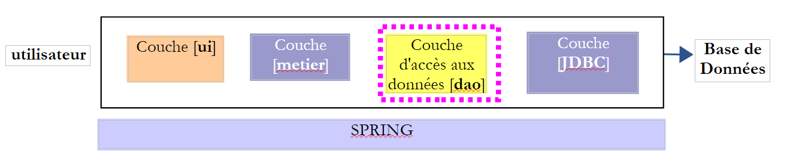 |
Les données nécessaires à l'élection sont enregistrées dans une base de données MySQL [dbelections]
7.1. Support
 |
Le dossier [support / chap-07] [1] contient :
- les projets Eclipse de ce chapitre [2] ;
- le script SQL de création de la base MySQL [dbelections] [3] ;
7.2. La base de données [dbelections]
Travail à faire : créez la base MySQL [dblelections] en suivant la procédure suivie au paragraphe 6.4.2.
La base [dbelections] est une base MySQL avec deux tables :
 |
La table [conf] contient les informations de configuration de l'élection :
 |
- [id] : clé primaire auto-incrémentée ;
- [version] : n° de version de l'enregistrement - peut être ignoré ici ;
- [sap] : nombre de sièges à pourvoir ;
- [seuilelectoral] : la barre au-dessous de laquelle une liste est éliminée ;
Son contenu est le suivant :
 |
La table [listes] contient les listes candidates de l'élection :
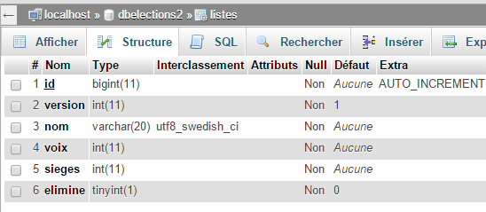 |
- [id] : clé primaire auto-incrémentée ;
- [version] : n° de version de l'enregistrement - peut être ignoré ici ;
- [nom] : nom de la liste ;
- [voix] : voix de la liste - n'est connu qu'après saisie de l'utilisateur dans la couche [présentation] ;
- [sieges] : nombre de sièges obtenus - n'est connu qu'après calcul de la couche [métier] ;
- [elimine] : à 1 si la liste est éliminée, à 0 sinon - n'est connu qu'après calcul de la couche [métier] ;
Le contenu de la table [listes] est le suivant :
 |
Le script SQL pour générer la base [dbelections] s'appelle [dbelections.sql] et est sur le serveur. Son code est le suivant :
-- phpMyAdmin SQL Dump
-- version 4.0.4
-- http://www.phpmyadmin.net
--
-- Client: localhost
-- Généré le: Mer 11 Mars 2015 à 12:20
-- Version du serveur: 5.6.12-log
-- Version de PHP: 5.4.12
SET SQL_MODE = "NO_AUTO_VALUE_ON_ZERO";
SET time_zone = "+00:00";
/*!40101 SET @OLD_CHARACTER_SET_CLIENT=@@CHARACTER_SET_CLIENT */;
/*!40101 SET @OLD_CHARACTER_SET_RESULTS=@@CHARACTER_SET_RESULTS */;
/*!40101 SET @OLD_COLLATION_CONNECTION=@@COLLATION_CONNECTION */;
/*!40101 SET NAMES utf8 */;
--
-- Base de données: `dbelections`
--
CREATE DATABASE IF NOT EXISTS `dbelections` DEFAULT CHARACTER SET utf8 COLLATE utf8_swedish_ci;
USE `dbelections`;
-- --------------------------------------------------------
--
-- Structure de la table `conf`
--
CREATE TABLE IF NOT EXISTS `conf` (
`id` bigint(11) NOT NULL AUTO_INCREMENT,
`version` int(11) NOT NULL DEFAULT '1',
`sap` tinyint(4) NOT NULL,
`seuilelectoral` double NOT NULL,
PRIMARY KEY (`id`)
) ENGINE=InnoDB DEFAULT CHARSET=utf8 COLLATE=utf8_swedish_ci AUTO_INCREMENT=2 ;
--
-- Contenu de la table `conf`
--
INSERT INTO `conf` (`id`, `version`, `sap`, `seuilelectoral`) VALUES
(1, 1, 6, 0.05);
-- --------------------------------------------------------
--
-- Structure de la table `listes`
--
CREATE TABLE IF NOT EXISTS `listes` (
`id` bigint(11) NOT NULL AUTO_INCREMENT,
`version` int(11) NOT NULL DEFAULT '1',
`nom` varchar(20) COLLATE utf8_swedish_ci NOT NULL,
`voix` int(11) NOT NULL,
`sieges` int(11) NOT NULL,
`elimine` tinyint(1) NOT NULL DEFAULT '0',
PRIMARY KEY (`id`),
UNIQUE KEY `nom` (`nom`)
) ENGINE=InnoDB DEFAULT CHARSET=utf8 COLLATE=utf8_swedish_ci AUTO_INCREMENT=8 ;
--
-- Contenu de la table `listes`
--
INSERT INTO `listes` (`id`, `version`, `nom`, `voix`, `sieges`, `elimine`) VALUES
(1, 21, 'A', 10, 1, 0),
(2, 22, 'B', 20, 2, 0),
(3, 21, 'C', 30, 3, 0),
(4, 13, 'D', 40, 3, 0),
(5, 17, 'E', 50, 6, 0),
(6, 18, 'F', 60, 1, 0),
(7, 19, 'G', 70, 2, 0);
/*!40101 SET CHARACTER_SET_CLIENT=@OLD_CHARACTER_SET_CLIENT */;
/*!40101 SET CHARACTER_SET_RESULTS=@OLD_CHARACTER_SET_RESULTS */;
/*!40101 SET COLLATION_CONNECTION=@OLD_COLLATION_CONNECTION */;
7.3. Le projet Eclipse
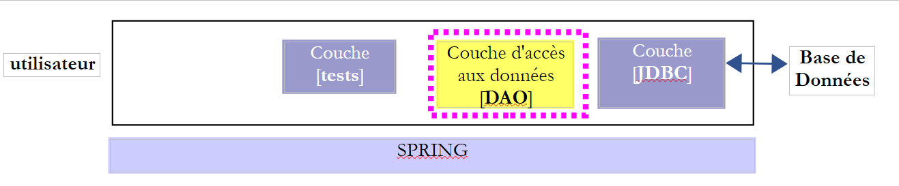 |
Le projet Eclipse de la couche [DAO] sera le suivant :
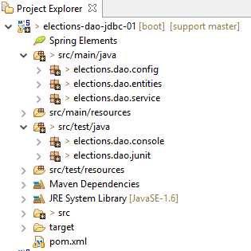 |
- le package [elections.dao.entities] contient les objets manipulés par la couche [DAO] ;
- le package [elections.dao.service] contient l'implémentation de la couche [DAO] ;
- le package [elections.dao.config] contient la configuration de la couche [DAO]
- le package [elections.dao.junit] contient une classe de test JUnit du projet ;
- le package [elections.dao.console] contient une classe exécutable de test ;
7.4. Configuration du projet Maven
 |
Le fichier [pom.xml] qui configure le projet Maven est le suivant :
<project xmlns="http://maven.apache.org/POM/4.0.0" xmlns:xsi="http://www.w3.org/2001/XMLSchema-instance"
xsi:schemaLocation="http://maven.apache.org/POM/4.0.0 http://maven.apache.org/xsd/maven-4.0.0.xsd">
<modelVersion>4.0.0</modelVersion>
<groupId>istia.st.elections</groupId>
<artifactId>elections-dao-jdbc-01</artifactId>
<version>0.0.1-SNAPSHOT</version>
<parent>
<groupId>org.springframework.boot</groupId>
<artifactId>spring-boot-starter-parent</artifactId>
<version>1.2.7.RELEASE</version>
</parent>
<properties>
<project.build.sourceEncoding>UTF-8</project.build.sourceEncoding>
<java.version>1.8</java.version>
</properties>
<dependencies>
<!-- MySQL -->
<dependency>
<groupId>mysql</groupId>
<artifactId>mysql-connector-java</artifactId>
</dependency>
<!-- Spring -->
<dependency>
<groupId>org.springframework</groupId>
<artifactId>spring-context</artifactId>
</dependency>
<!-- Tomcat Jdbc -->
<dependency>
<groupId>org.apache.tomcat</groupId>
<artifactId>tomcat-jdbc</artifactId>
</dependency>
<!-- bibliothèque jSON -->
<dependency>
<groupId>com.fasterxml.jackson.core</groupId>
<artifactId>jackson-databind</artifactId>
</dependency>
<!-- Spring Boot -->
<dependency>
<groupId>org.springframework.boot</groupId>
<artifactId>spring-boot</artifactId>
<scope>test</scope>
</dependency>
<!-- Spring Boot Test -->
<dependency>
<groupId>org.springframework.boot</groupId>
<artifactId>spring-boot-starter-test</artifactId>
<scope>test</scope>
</dependency>
<!-- Spring Boot Logging -->
<dependency>
<groupId>org.springframework.boot</groupId>
<artifactId>spring-boot-starter-logging</artifactId>
</dependency>
</dependencies>
<!-- plugins -->
<build>
<plugins>
<plugin>
<artifactId>maven-assembly-plugin</artifactId>
<configuration>
<archive>
<manifest>
<mainClass>config.AppConfig</mainClass>
</manifest>
</archive>
<descriptorRefs>
<descriptorRef>jar-with-dependencies</descriptorRef>
</descriptorRefs>
</configuration>
</plugin>
<!-- pour l'installation de l'artifact du projet dans le dépôt local Maven -->
<plugin>
<groupId>org.apache.maven.plugins</groupId>
<artifactId>maven-surefire-plugin</artifactId>
<version>2.18.1</version>
</plugin>
</plugins>
</build>
</project>
Ce fichier est analogue à celui décrit au paragraphe 6.5.1. On y a apporté les modifications suivantes :
- lignes 8-12 : on a défini un projet Maven parent. Le projet [spring-boot-starter-parent] (ligne 10) définit un très grand nombre de dépendances avec leurs versions. Lorsqu'on utilise l'une d'elles (lignes 19-57), il est alors inutile d'en préciser la version, celle-ci étant définie dans le projet Maven parent ;
- lignes 40-51 : dépendances nécessaires à la classe de test du projet. Ces dépendances ont l'attribut [<scope>test</scope>] qui signifie qu'elles ne sont nécessaires que pour les classes du dossier [src / test / java]. Ces dépendances ne seront pas incluses dans l'archive finale du projet ;
- lignes 53-56 : la bibliothèque [spring-boot-starter-logging] sera utilisée par Spring pour faire des logs à l'écran ;
- lignes 14-17 : des propriétés de configuration Maven :
- ligne 15 : indique que les fichiers source sont codés en UTF-8 ;
- ligne 16 : indique que le compilateur à utiliser doit être de niveau 1.8 ;
7.5. Les entités de la couche [DAO]
 |
- [ElectionsConfig] est le modèle objet associé à une ligne de la table [CONF] ;
- [ListeElectorale] est le modèle objet associé à une ligne de la table [LISTES] ;
- [AbstactEntity] est la classe parent des deux classes précédentes. Elle factorise les champs [id, version] communs aux deux classes ;
- [ElectionsException] est une classe d'exception ;
7.5.1. La classe [ElectionsException]
 |
La classe [ElectionsException] a été décrite au paragraphe 4.3. Nous redonnons son code :
package ...;
import java.io.Serializable;
import java.util.ArrayList;
import java.util.List;
// classe d'exception pour l'application Elections
// l'exception est non contrôlée
public class ElectionsException extends RuntimeException implements Serializable {
// serial ID
private static final long serialVersionUID = 1L;
// champs locaux
private int code;
private List<String> erreurs;
// constructeurs
public ElectionsException() {
super();
}
public ElectionsException(int code, Throwable e) {
// parent
super(e);
// local
this.code = code;
this.erreurs = getErreursForException(e);
}
public ElectionsException(int code, String message, Throwable e) {
// parent
super(message,e);
// local
this.code = code;
this.erreurs = getErreursForException(e);
}
public ElectionsException(int code, String message) {
// parent
super(message);
// local
this.code = code;
List<String> erreurs = new ArrayList<>();
erreurs.add(message);
this.erreurs = erreurs;
}
public ElectionsException(int code, List<String> erreurs) {
// parent
super();
// local
this.code = code;
this.erreurs = erreurs;
}
// liste des messages d'erreur d'une exception
private List<String> getErreursForException(Throwable th) {
// on récupère la liste des messages d'erreur de l'exception
Throwable cause = th;
List<String> erreurs = new ArrayList<>();
while (cause != null) {
// on récupère le message seulement s'il est !=null et non blanc
String message = cause.getMessage();
if (message != null) {
message = message.trim();
if (message.length() != 0) {
erreurs.add(message);
}
}
// cause suivante
cause = cause.getCause();
}
return erreurs;
}
// getters et setters
...
}
Un objet [ElectionsException] est caractérisé par deux informations :
- ligne 16 : un code d'erreur ;
- ligne 17 : une liste de messages d'erreur associés à la pile des exceptions qui se sont produites ;
- la classe a 5 constructeurs (lignes 20, 24, 32, 40, 50) ;
- lignes 59-76 : la méthode [getErreursForException] permet de récupérer les messages d'erreur de la pile d'exceptions ;
7.5.2. La classe [AbstractEntity]
 |
La classe [AbstractEntity] est la suivante :
package elections.dao.entities;
import java.io.Serializable;
import com.fasterxml.jackson.core.JsonProcessingException;
import com.fasterxml.jackson.databind.ObjectMapper;
public abstract class AbstractEntity implements Serializable {
private static final long serialVersionUID = 1L;
// champs
protected Long id;
protected Long version;
// constructeurs
public AbstractEntity() {
}
public AbstractEntity(Long id, Long version) {
this.id = id;
this.version = version;
}
// signature
public String toString() {
try {
return new ObjectMapper().writeValueAsString(this);
} catch (JsonProcessingException e) {
e.printStackTrace();
return null;
}
}
// getters et setters
...
}
Elle mémorise les champs [ID, NOM] des lignes des tables [CONF] et [LISTES] (lignes 8-9).
- ligne 8 : la classe a l'attribut [Abstract] indiquant qu'elle ne peut être instanciée. Elle ne peut être que dérivée ;
- lignes 26-33 : signature jSON de l'objet ;
- ligne 28 : on retourne la chaîne jSON de [this]. Si au moment de l'exécution, [this] représente un objet dérivé de [AbstactEntity], c'est la chaîne jSON de l'objet dérivé qui est obtenue. Les classes dérivées n'auront ainsi pas besoin de définir une méthode [toString]. Celle de la classe parent est suffisante ;
7.5.3. La classe [ElectionsConfig]
 |
La classe [ElectionsConfig] est la suivante :
package elections.dao.entities;
public class ElectionsConfig extends AbstractEntity {
private static final long serialVersionUID = 1L;
// champs
private int nbSiegesAPourvoir;
private double seuilElectoral;
// constructeurs
public ElectionsConfig() {
}
public ElectionsConfig(Long id, Long version, int nbSiegesAPourvoir, double seuilElectoral) {
// parent
super(id, version);
// champs locaux
this.nbSiegesAPourvoir = nbSiegesAPourvoir;
this.seuilElectoral = seuilElectoral;
}
// getters et setters
...
}
- ligne 4 : la classe étend la classe [AbstractEntity] ;
- lignes 8-9 : mémorisent les informations des colonnes [SAP, SEUILELECTORAL] de la table [CONF] ;
7.5.4. La classe [ListeElectorale]
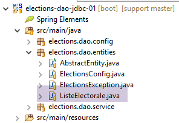 |
La classe [ListeElectorale] est la suivante :
package elections.dao.entities;
public class ListeElectorale extends AbstractEntity {
// champs
private String nom;
private int voix;
private int sieges;
private boolean elimine;
// constructeurs
public ListeElectorale() {
}
public ListeElectorale(String nom, int voix, int sieges, boolean elimine) {
// parent
super();
// champs locaux
initNom(nom);
initVoix(voix);
initSieges(sieges);
this.elimine=elimine;
}
public ListeElectorale(Long id, Long version, String nom, int voix, int sieges, boolean elimine) {
// parent
super(id, version);
// champs locaux
initNom(nom);
initVoix(voix);
initSieges(sieges);
this.elimine=elimine;
}
// méthodes privées
private void initNom(String nom) {
this.nom = nom.trim();
if ("".equals(nom)) {
throw new ElectionsException(10, "Le nom ne peut être vide");
}
}
private void initVoix(int voix) {
this.voix = voix;
if (voix < 0) {
throw new ElectionsException(11, "Le nombre de voix ne peut être <0");
}
}
private void initSieges(int sieges) {
this.sieges = sieges;
if (sieges < 0) {
throw new ElectionsException(12, "Le nombre de sièges ne peut être <0");
}
}
// getters et setters
public String getNom() {
return nom;
}
public void setNom(String nom) {
initNom(nom);
}
public int getVoix() {
return voix;
}
public void setVoix(int voix) {
initVoix(voix);
}
public int getSieges() {
return sieges;
}
public void setSieges(int sieges) {
initSieges(sieges);
}
public boolean isElimine() {
return elimine;
}
public void setElimine(boolean elimine) {
this.elimine = elimine;
}
}
- ligne 3 : la classe étend la classe [AbstractEntity] ;
- lignes 6-9 : la classe mémorise les colonnes [NOM, VOIX, SIEGES, ELIMINE] de la table [LISTES] ;
7.6. Configuration Spring de la couche [DAO]
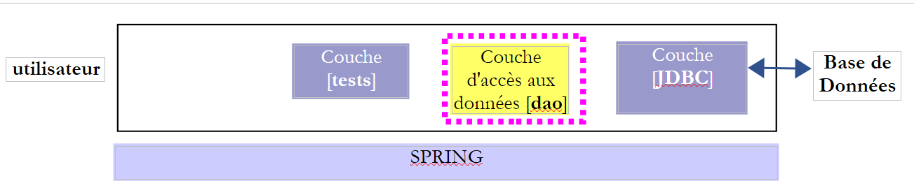 |
 |
La classe [AppConfig] est une classe de configuration Spring qui configure l'accès à la base de données de la façon suivante :
package elections.dao.config;
import org.apache.tomcat.jdbc.pool.DataSource;
import org.springframework.cache.CacheManager;
import org.springframework.cache.annotation.EnableCaching;
import org.springframework.cache.concurrent.ConcurrentMapCacheManager;
import org.springframework.context.annotation.Bean;
import org.springframework.context.annotation.ComponentScan;
import org.springframework.context.annotation.Configuration;
@ComponentScan(basePackages = { "elections.dao.service" })
@EnableCaching
public class AppConfig {
// constantes
public final static String URL = "jdbc:mysql://localhost:3306/dbelections";
public final static String USER = "root";
public final static String PASSWD = "";
public final static String DRIVER_CLASSNAME = "com.mysql.jdbc.Driver";
public final static String SELECT_LISTES = "SELECT ID, VERSION, NOM, VOIX, SIEGES, ELIMINE FROM LISTES";
public final static String SELECT_CONF = "SELECT ID, VERSION, SAP, SEUILELECTORAL, SAP FROM CONF";
public final static String UPDATE_LISTES = "UPDATE LISTES SET VOIX=?, SIEGES=?, ELIMINE=? WHERE ID=?";
@Bean
public DataSource dataSource() {
// source de données TomcatJdbc
DataSource dataSource = new DataSource();
// configuration accès JDBC
dataSource.setDriverClassName(DRIVER_CLASSNAME);
dataSource.setUsername(USER);
dataSource.setPassword(PASSWD);
dataSource.setUrl(URL);
// une connexion ouverte initialement
dataSource.setInitialSize(1);
// résultat
return dataSource;
}
@Bean
public CacheManager cacheManager() {
return new ConcurrentMapCacheManager("electionsConfig");
}
}
- lignes 25-38 : l'accès à la BD se fera via une source de données [tomcat-jdbc]. Ce type de source a été utilisée et expliquée au paragraphe 6.5 ;
- lignes 17-23 : un ensemble de constantes statiques accessibles par toutes les classes du projet ;
- ligne 13 : l'annotation [@Configuration] fait de la classe [AppConfig] une classe de configuration Spring ;
- ligne 11 : l'annotation [@ComponentScan] indique les packages où on peut trouver des objets Spring. Ici, nous allons définir un objet Spring dans le package [dao]. L'annotation [@ComponentScan] fait de la classe une classe de configuration qui nous épargne de mettre l'annotation [@Configuration] ;
- la ligne 12 active la gestion d'un cache. Le principe est la suivant :
- on met l'annotation [@Cacheable('nom_du_cache')] à une méthode M. Le 'nom_du-cache' est le nom utilisé ligne 41 ;
- lorsque la méthode M est appelée la 1ère fois, ses résultats sont rendus et également mis dans le cache nommé par l'annotation ;
- lorsque la méthode M est appelée les fois suivantes avec les mêmes paramètres que la 1ère fois, elle n'est pas exécutée et Spring se contente de rendre les valeurs mises en cache ;
7.7. Configuration des logs
 |
Les bibliothèques de logs sont définies par la dépendance suivante dans [pom.xml] :
<!-- Spring Boot Logging -->
<dependency>
<groupId>org.springframework.boot</groupId>
<artifactId>spring-boot-starter-logging</artifactId>
</dependency>
Cette dépendance amène les bibliothèques suivantes :
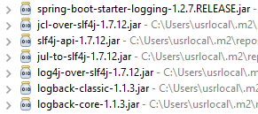 |
C'est la bibliothèque [logback] qui va assurer les logs. Elle est configurée par deux fichiers :
- [logback.xml] pour la branche principale du code ;
- [logback-test.xml] pour la branche de test du code. En l'absence de ce fichier, le fichier précédent est alors utilisé ;
Ces deux fichiers doivent se trouver dans le [Classpath] du projet. Pour cette raison, ils sont placés dans le dossier :
- [src / main / ressources] pour la branche principale du code ;
- [src / test / ressources] pour la branche de test du code ;
Le contenu des fichiers est ici le même :
<configuration>
<appender name="STDOUT" class="ch.qos.logback.core.ConsoleAppender">
<!-- encoders are by default assigned the type
ch.qos.logback.classic.encoder.PatternLayoutEncoder -->
<encoder>
<pattern>%d{HH:mm:ss.SSS} [%thread] %-5level %logger{36} - %msg%n</pattern>
</encoder>
</appender>
<!-- contrôle niveau des logs -->
<root level="info"> <!-- info, debug, warn -->
<appender-ref ref="STDOUT" />
</root>
</configuration>
Tout se passe ligne 12 où on fixe le niveau d'information désiré :
- [debug] : le niveau le plus détaillé ;
- [off] : pas de logs ;
- [info] : le niveau normal des logs ;
- [warn] : idem niveau [info] plus les messages d'avertissement (warning). Ces messages indiquent une possibilité d'erreur ;
Passez en mode [debug] dès que des erreurs apparaissent à l'exécution.
7.8. Implémentation de la couche [DAO]
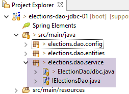 |
L'interface [IDao] de la couche [DAO] est la suivante :
package istia.st.elections.webapi.client.dao;
import istia.st.elections.webapi.client.entities.ElectionsConfig;
import istia.st.elections.webapi.client.entities.ListeElectorale;
public interface IDao {
// configuration des élections
public ElectionsConfig getElectionsConfig();
// les listes en compétition
public ListeElectorale[] getListesElectorales();
// sauvegarde des résultats de l'élection
public void setListesElectorales(ListeElectorale[] listesElectorales);
}
Le squelette de la classe [ElectionsDaoJdbc] implémentant la couche [dao] avec une base de données sera le suivant :
package elections.dao.service;
import java.sql.Connection;
import java.sql.PreparedStatement;
import java.sql.ResultSet;
import java.sql.SQLException;
import org.apache.tomcat.jdbc.pool.DataSource;
import org.springframework.beans.factory.annotation.Autowired;
import org.springframework.cache.annotation.Cacheable;
import org.springframework.stereotype.Component;
import elections.dao.entities.ElectionsConfig;
import elections.dao.entities.ElectionsException;
import elections.dao.entities.ListeElectorale;
@Component
@SuppressWarnings("unused")
public class ElectionDaoJdbc implements IElectionsDao {
@Autowired
private DataSource dataSource;
@Cacheable("electionsConfig")
// obtention conf de l'élection
public ElectionsConfig getElectionsConfig() {
throw new RuntimeException("[getElectionsConfig] not yet implemented");
}
// obtention des listes
public ListeElectorale[] getListesElectorales() {
throw new RuntimeException("[getListesElectorales] not yet implemented");
}
// modification des listes [voix, sieges, elimine]
public void setListesElectorales(ListeElectorale[] listesElectorales) {
throw new RuntimeException("[setListesElectorales] not yet implemented");
}
// -------------------- méthodes privées
// gestion du finally
private ElectionsException doFinally(int code, ResultSet rs, PreparedStatement ps, Connection connexion) {
// fermeture ResultSet
if (rs != null) {
try {
rs.close();
} catch (SQLException e1) {
}
}
// fermeture [PreparedStatement]
if (ps != null) {
try {
ps.close();
} catch (SQLException e2) {
}
}
// fermer la connexion
if (connexion != null) {
try {
connexion.close();
} catch (SQLException e3) {
// on retourne une [ElectionsException]
return new ElectionsException(code, e3);
}
}
// pas d'exception
return null;
}
// gestion du catch
private ElectionsException doCatchException(int code1, int code2, Connection connexion, Throwable th) {
// on génère une [ElectionsException]
ElectionsException ex1 = new ElectionsException(code1, th);
// annulation transaction
try {
if (connexion != null) {
connexion.rollback();
}
} catch (SQLException e2) {
}
// on retourne l'exception
return ex1;
}
}
- ligne 24 : l'annotation [@Cacheable] est une annotation Spring qui demande de mettre en mémoire ('cacher') les résultats de la méthode [getElectionsConfig]. Il est possible de faire cela ici parce que le contenu de la table [CONF] ne change jamais. Il ne serait pas possible de mettre cette annotation sur la méthode [getListesElectorales] car le contenu de la table [LISTES] change au cours du temps ;
- les méthodes [doCatchException] et [doFinally] retournent un type [ElectionsException]. La méthode [doFinally] rend un pointeur null si la libération des ressources s'est faite sans erreurs ;
Travail à faire : écrivez la classe [ElectionDaoJdbc] en vous inspirant de la classe [IntroJdbc02] étudiée au paragraphe 6.5.2.
7.9. La classe de test [Main]
 |
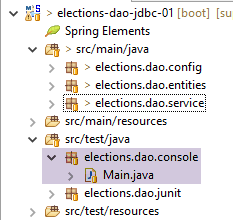 |
La classe [Main] est la suivante :
package elections.dao.console;
import java.util.ArrayList;
import java.util.List;
import org.springframework.context.annotation.AnnotationConfigApplicationContext;
import elections.dao.config.AppConfig;
import elections.dao.entities.ElectionsConfig;
import elections.dao.entities.ElectionsException;
import elections.dao.entities.ListeElectorale;
import elections.dao.service.IElectionsDao;
public class Main {
// source de données
private static IElectionsDao dao;
public static void main(String[] args) {
// on récupère la référence de la couche [DAO] après avoir instancié le contexte Spring
try (AnnotationConfigApplicationContext ctx = new AnnotationConfigApplicationContext(AppConfig.class)) {
// récupération de la source de données
dao = ctx.getBean(IElectionsDao.class);
} catch (Exception e) {
System.out.println("Les erreurs suivantes se sont produites lors de l'initialisation du contexte Spring -------");
for (String erreur : getErreursForThrowable(e)) {
System.out.println(erreur);
}
// fin
return;
}
// lecture de la BD
ElectionsConfig electionsConfig = null;
ListeElectorale[] listes;
try {
// contenu des deux tables
electionsConfig = dao.getElectionsConfig();
listes = dao.getListesElectorales();
} catch (ElectionsException e) {
System.out.println("Les erreurs suivantes se sont produites lors de la lecture des tables ----------");
for (String erreur : e.getErreurs()) {
System.out.println(erreur);
}
// fin
return;
}
// tout s'est bien passé - affichage
System.out.println(String.format("Nombre de sièges à pourvoir : %d", electionsConfig.getNbSiegesAPourvoir()));
System.out.println(String.format("Seuil électoral : %5.2f", electionsConfig.getSeuilElectoral()));
System.out.println("Listes candidates----------------");
for (ListeElectorale liste : listes) {
System.out.println(liste);
}
}
// méthodes privées ------------------
private static List<String> getErreursForThrowable(Throwable th) {
// on récupère la liste des messages d'erreur de l'exception
Throwable cause = th;
List<String> erreurs = new ArrayList<>();
while (cause != null) {
// on récupère le message seulement s'il est !=null et non blanc
String message = cause.getMessage();
if (message != null) {
message = message.trim();
if (message.length() != 0) {
erreurs.add(message);
}
}
// cause suivante
cause = cause.getCause();
}
return erreurs;
}
}
- lignes 21-31 : récupération d'une référence sur la couche [DAO] ;
- ligne 21 : on utilise une syntaxe appelée try_with_resources. Sa syntaxe est la suivante :
try (T ressource=expression) {
// exploitation de ressource
...
}
- (suite)
- le type T de la ligne 1 doit implémenter l'interface [java.lang.AutoCloseable] ;
- à la sortie du bloc des lignes 1-4, la ressource de type [java.lang.AutoCloseable] est automatiquement libérée qu'il y ait eu exception ou pas. Ceux qui connaissent le langage C# reconnaîtront là un frère syntaxique et fonctionnel de la clause using (T ressource=expression) ;
- lignes 40-49 : utilisation de la couche [DAO] pour obtenir le contenu des tables [CONF] et [LISTES] ;
- lignes 41-47 : on teste le cache [electionsconfig]. Celui-ci a été défini à deux endroits :
- dans la classe [ElectionsDaoJdbc] :
@Cacheable("electionsConfig")
public ElectionsConfig getElectionsConfig() {
- (suite)
- dans la classe de configuration [AppConfig] :
@EnableCaching
public class AppConfig {
...
@Bean
public CacheManager cacheManager() {
return new ConcurrentMapCacheManager("electionsConfig");
}
}
- ligne 59 : fermeture du contexte Spring ;
- lignes 62-67 : affichage des informations obtenues ;
Les résultats obtenus avec une couche [DAO] implémentée sont les suivants :
- lignes 2-4 : montrent l'influence du cache :
- la requête 1 dure 80 millisecondes ;
- la requête 2 dure 1 milliseconde ;
Lorsque la base de données est coupée on obtient les résultats suivants :
7.10. Tests JUnit de la classe [ElectionsDaoJdbc]
 |
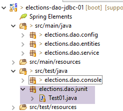 |
La classe [Test01] est la classe de test [JUnit] suivante :
package elections.dao.junit;
import org.junit.Assert;
import org.junit.Before;
import org.junit.Test;
import org.junit.runner.RunWith;
import org.springframework.beans.factory.annotation.Autowired;
import org.springframework.boot.test.SpringApplicationConfiguration;
import org.springframework.test.context.junit4.SpringJUnit4ClassRunner;
import elections.dao.config.AppConfig;
import elections.dao.entities.ElectionsConfig;
import elections.dao.entities.ListeElectorale;
import elections.dao.service.IElectionsDao;
@SpringApplicationConfiguration(classes = AppConfig.class)
@RunWith(SpringJUnit4ClassRunner.class)
public class Test01 {
// couche [DAO]
@Autowired
private IElectionsDao electionsDao;
@Before
public void init() {
// on nettoie la table [LISTES]
// listes en compétition
ListeElectorale[] listes = electionsDao.getListesElectorales();
// on met à 0 les voix et sièges et elimine à false
int voix = 0;
int sièges = 0;
boolean elimine = false;
for (ListeElectorale liste : listes) {
liste.setVoix(voix);
liste.setSieges(sièges);
liste.setElimine(elimine);
}
// on rend ces données persistantes grâce à la couche [dao]
electionsDao.setListesElectorales(listes);
}
@Test
public void testElections01() {
...
}
}
- ligne 17 : l'annotation [RunWith] qui est une annotation [JUnit] (ligne 6) assure l'intégration avec Spring via la classe [SpringJUnit4ClassRunner] ;
- ligne 16 : l'annotation [SpringApplicationConfiguration] est une annotation [Spring] (ligne 8) qui permet de désigner les classes de configuration du test JUnit. Ici on désigne la classe [AppConfig] utilisée pour configurer le projet. On dispose alors de tous les objets Spring définis par cette classe de configuration. C'est ainsi qu'on peut injecter lignes 21-22 une référence sur la couche [DAO] qui va être testée ;
- ligne 25 : l'annotation [Before] désigne une méthode qui doit être exécutée avant chaque test ;
- lignes 26-41 : la méthode [init] met les voix et sièges des listes de la table [LISTES] à zéro et le booléen [elimine] à [false] ;
L'unique méthode de test est la suivante :
@Test
public void testElections01() {
System.out.println("testElections01-------------------------------------");
// récupération de la configuration des élections
ElectionsConfig electionsConfig = electionsDao.getElectionsConfig();
int nbSiegesAPourvoir = electionsConfig.getNbSiegesAPourvoir();
double seuilElectoral = electionsConfig.getSeuilElectoral();
Assert.assertEquals(6, nbSiegesAPourvoir);
Assert.assertEquals(0.05, seuilElectoral, 1E-6);
// listes en compétition
ListeElectorale[] listes = electionsDao.getListesElectorales();
// affichage valeurs lues
System.out.println("Nombre de sièges à pourvoir : " + nbSiegesAPourvoir);
System.out.println("Seuil électoral : " + seuilElectoral);
System.out.println("Listes en compétition ---------------------");
for (int i = 0; i < listes.length; i++) {
System.out.println(listes[i]);
}
// on affecte des voix et des sièges aux listes
int voix = 0;
int sièges = 0;
boolean elimine = false;
for (ListeElectorale liste : listes) {
liste.setVoix(voix);
liste.setSieges(sièges);
liste.setElimine(elimine);
voix += 10;
sièges += 1;
elimine = !elimine;
}
// on rend ces données persistantes grâce à la couche [dao]
electionsDao.setListesElectorales(listes);
// on relit les données
ListeElectorale[] listesElectorales2 = electionsDao.getListesElectorales();
// on vérifie les données lues
Assert.assertEquals(7, listesElectorales2.length);
voix = 0;
sièges = 0;
elimine = false;
for (ListeElectorale liste : listesElectorales2) {
Assert.assertEquals(voix, liste.getVoix());
Assert.assertEquals(sièges, liste.getSieges());
Assert.assertEquals(elimine, liste.isElimine());
voix += 10;
sièges += 1;
elimine = !elimine;
}
System.out.println("Listes en compétition ---------------------");
for (int i = 0; i < listes.length; i++) {
System.out.println(listes[i]);
}
}
- lignes 5-9 : on s'assure qu'on est capable de récupérer le contenu de la table [CONF] ;
- lignes 11-19 : on affiche le contenu de la table [LISTES]. Il n'y a pas de tests ici, seulement un contrôle visuel ;
- lignes 21-35 : on modifie en base, la table [LISTES] en donnant aux listes des valeurs pour leurs champs [voix, sieges, elimine] ;
- lignes 37-51 : on relit la table [LISTES] et on vérifie que ce qui est obtenu est bien égal à ce qui a été mis ;
- lignes 52-55 : vérification visuelle ;
Les résultats console obtenus avec une couche [DAO] implémentée sont les suivants :
- lignes 1-23 : logs de Spring Test ;
- lignes 25-26 : le contenu de la table [CONF] ;
- lignes 27-34 : le contenu initial de la table [LISTES] ;
- lignes 35-42 : le contenu de la table [LISTES] après affectation de valeurs aux champs [voix, sieges, elimine] ;
Par ailleurs le test JUnit réussit :
 |
7.11. Création de l'archive [with-dependencies] de la couche [dao]
Le projet final a l'architecture suivante :
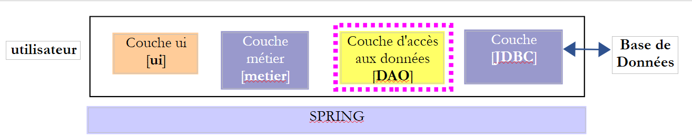 |
Rappelons la configuration Maven du projet :
<project xmlns="http://maven.apache.org/POM/4.0.0" xmlns:xsi="http://www.w3.org/2001/XMLSchema-instance"
xsi:schemaLocation="http://maven.apache.org/POM/4.0.0 http://maven.apache.org/xsd/maven-4.0.0.xsd">
<modelVersion>4.0.0</modelVersion>
<groupId>istia.st.elections</groupId>
<artifactId>elections-dao-jdbc-01</artifactId>
<version>0.0.1-SNAPSHOT</version>
<parent>
<groupId>org.springframework.boot</groupId>
<artifactId>spring-boot-starter-parent</artifactId>
<version>1.2.7.RELEASE</version>
</parent>
<dependencies>
<!-- MySQL -->
<dependency>
<groupId>mysql</groupId>
<artifactId>mysql-connector-java</artifactId>
</dependency>
<!-- Spring -->
<dependency>
<groupId>org.springframework</groupId>
<artifactId>spring-context</artifactId>
</dependency>
<!-- Tomcat Jdbc -->
<dependency>
<groupId>org.apache.tomcat</groupId>
<artifactId>tomcat-jdbc</artifactId>
</dependency>
<!-- bibliothèque jSON -->
<dependency>
<groupId>com.fasterxml.jackson.core</groupId>
<artifactId>jackson-databind</artifactId>
</dependency>
<!-- Spring Boot -->
<dependency>
<groupId>org.springframework.boot</groupId>
<artifactId>spring-boot</artifactId>
<scope>test</scope>
</dependency>
<!-- Spring Boot Test -->
<dependency>
<groupId>org.springframework.boot</groupId>
<artifactId>spring-boot-starter-test</artifactId>
<scope>test</scope>
</dependency>
<!-- Spring Boot Logging -->
<dependency>
<groupId>org.springframework.boot</groupId>
<artifactId>spring-boot-starter-logging</artifactId>
</dependency>
</dependencies>
<!-- plugins -->
<build>
<plugins>
<plugin>
<artifactId>maven-assembly-plugin</artifactId>
<configuration>
<archive>
<manifest>
<mainClass>config.AppConfig</mainClass>
</manifest>
</archive>
<descriptorRefs>
<descriptorRef>jar-with-dependencies</descriptorRef>
</descriptorRefs>
</configuration>
</plugin>
<!-- pour l'installation de l'artifact du projet dans le dépôt local Maven -->
<plugin>
<groupId>org.apache.maven.plugins</groupId>
<artifactId>maven-surefire-plugin</artifactId>
<version>2.18.1</version>
</plugin>
</plugins>
</build>
</project>
 |
Nous allons générer un unique jar qui contiendra les classes de tous les jars ci-dessus plus celles du projet de la couche [DAO]. Cela se fait à l'aide d'une modification dans le fichier [pom.xml] :
<project xmlns="http://maven.apache.org/POM/4.0.0" xmlns:xsi="http://www.w3.org/2001/XMLSchema-instance"
xsi:schemaLocation="http://maven.apache.org/POM/4.0.0 http://maven.apache.org/xsd/maven-4.0.0.xsd">
<modelVersion>4.0.0</modelVersion>
<groupId>istia.st.elections</groupId>
<artifactId>elections-jdbc-01</artifactId>
<version>0.0.1-SNAPSHOT</version>
<parent>
<groupId>org.springframework.boot</groupId>
<artifactId>spring-boot-starter-parent</artifactId>
<version>1.2.2.RELEASE</version>
</parent>
<properties>
<project.build.sourceEncoding>UTF-8</project.build.sourceEncoding>
<java.version>1.8</java.version>
</properties>
<dependencies>
...
</dependencies>
<!-- plugins -->
<build>
<plugins>
<plugin>
<artifactId>maven-assembly-plugin</artifactId>
<configuration>
<archive>
<manifest>
<mainClass>console.Main</mainClass>
</manifest>
</archive>
<descriptorRefs>
<descriptorRef>jar-with-dependencies</descriptorRef>
</descriptorRefs>
</configuration>
</plugin>
</plugins>
</build>
</project>
- lignes 25-37 : configurent un plugin Maven pour générer le jar ;
- ligne 15 : indique la version de Java à utiliser pour la compilation ;
Une fois cette modification faite, on peut générer le jar de la façon suivante [1-10] :
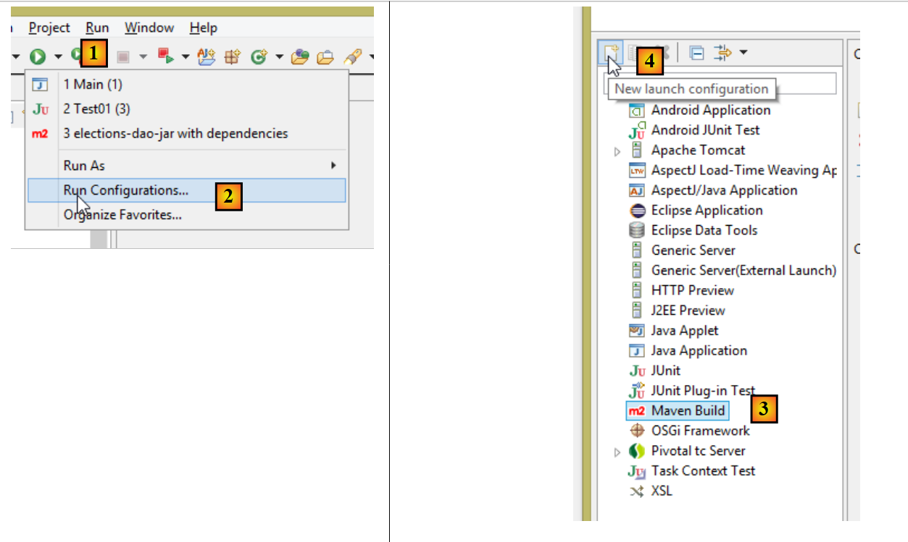 |
 |
- en [5], mettre le dossier du projet en utilisant le bouton [6] ;
- en [7], donner un nom à la configuration d'exécution ;
- en [8], mettre la liste des buts Maven à exécuter :
- [clean] : vide le dossier [target] du projet dans lequel va être placé le jar généré ;
- [compile] : compile le projet ;
- [assembly:single] : génère un unique jar comprenant toutes les classes du projet et de ses dépendances ;
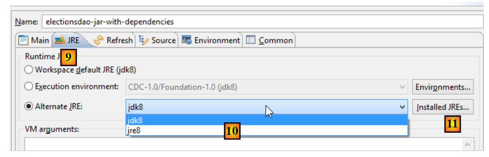 |
- en [9-10], vérifiez que vous avez un JDK (Java Development Kit) et non un JRE (Java Runtime Environment). La différence est que le JDK a un compilateur et pas le JRE. Si vous n'avez pas un JDK, il vous faut en ajouter un dans [10] avec [11]. Pour cela, suivre la procédure décrite au paragraphe 3.1 ;
 |
- en [17], exécutez la configuration d'exécution ;
- en [13], l'archive générée ;
On peut ouvrir cette archive avec un dézippeur :
 |
7.12. Test de l'archive de la couche [DAO]
Créons un projet Eclipse standard (pas Maven) [1] :
 |
Faisons un copier / coller du package [dao.console] du projet [elections-dao-jdbc-01] dans le projet [elections-dao-jdbc-02] [2]. De nombreuses erreurs apparaissent car la classe [Main] référence des classes qui ne sont pas dans son [Classpath]. Nous allons modifier celui-ci.
Nous créons tout d'abord [2-8] un dossier [lib] dans le nouveau projet :
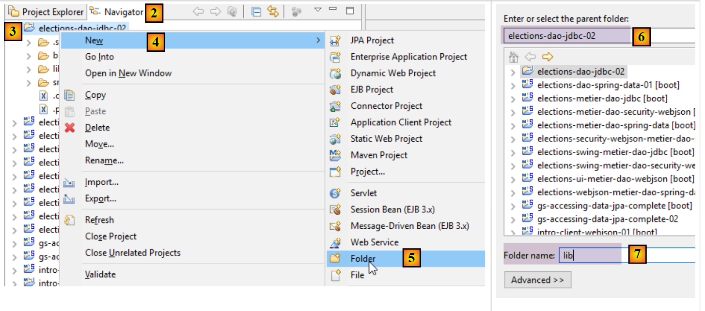 |
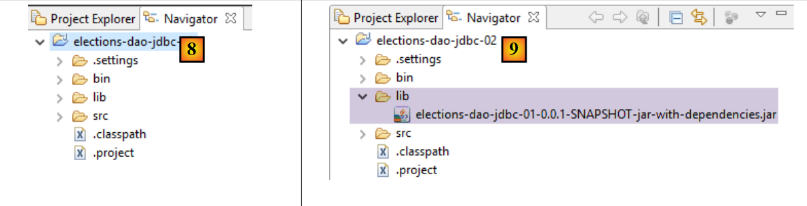 |
En [9], nous mettons l'archive créée à l'étape précédente dans le dossier [lib] puis nous modifions le Build Path du projet :
 |
 |
 |
- en [18], on a importé l'archive de la couche [DAO] créée précédemment ;
 |
- en [19], le projet ne présente plus d'erreurs ;
On peut alors exécuter la classe [Main]. On obtient les mêmes résultats que précédemment.